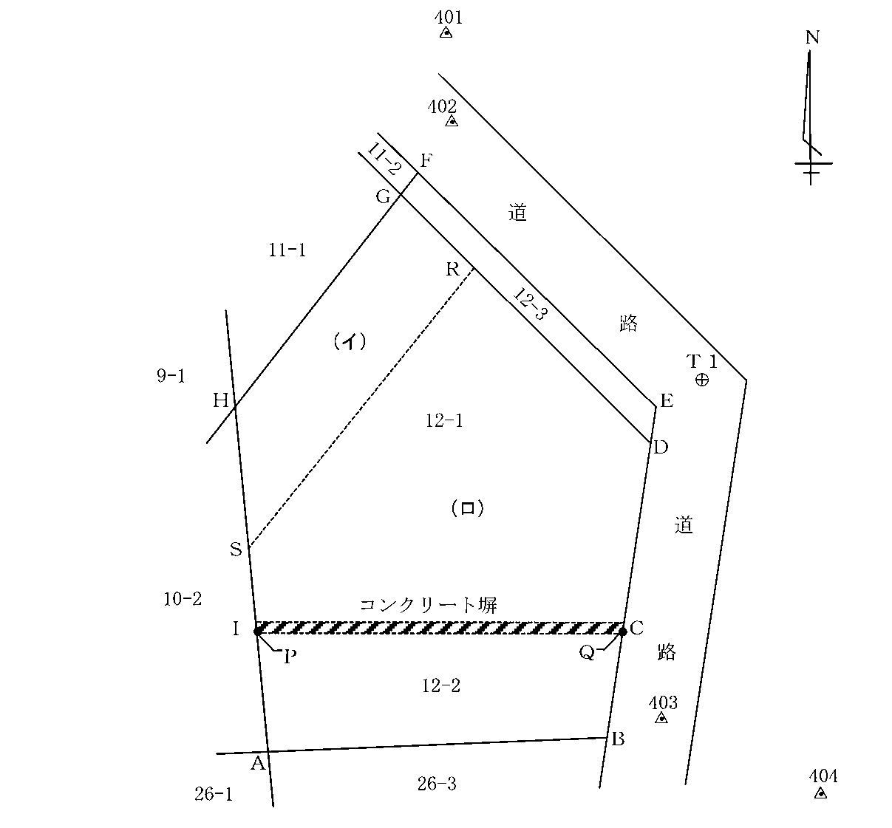
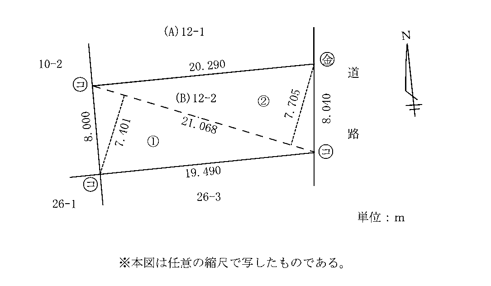
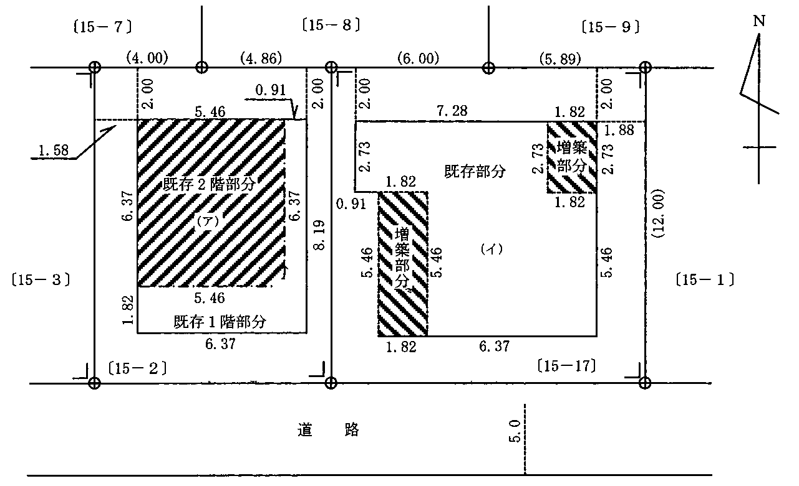
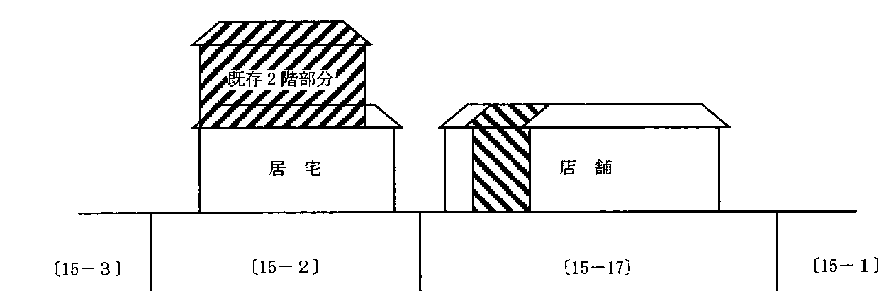

多肢択一式（第1問〜第20問）
第1問
A，B及びCが甲建物の持分を3分の1ずつ共有している場合に関する次のアからオまでの記述のうち，判例の趣旨に照らし正しいものの組合せは，後記1から5までのうちどれか。
- アDが甲建物を権原なく占有している場合には，Aは，Dに対し，単独で甲建物の明渡しを請求することができる。
- イAがB及びCの了解を得ることなく単独で甲建物を占有している場合には，B及びCは，Aに対し，直ちに甲建物の明渡しを請求することができる。
- ウA，B及びCがEに対して甲建物を賃貸した場合において，Eが賃料を長期にわたって支払わないときは，Aは，単独でEとの賃貸借契約を解除することができる。
- エAは，Fに対する債務を担保するため，甲建物の自己の持分について抵当権を設定することができる。
- オAがB及びCの了解を得ることなくGに対して甲建物を賃貸している場合には，B及びCは，Gに対し，直ちに甲建物の明渡しを請求することができる。
1 アイ2 アエ3 イウ4 ウオ5 エオ
第2問
意思表示に関する次の1から5までの記述のうち，誤っているものはどれか。
- 1AB間でAがBに土地を売り渡す契約を締結したが，Aが真意では売り渡すつもりがなかった場合において，BがAの真意を知っていたときは，当該契約は，無効である。
- 2AB間でAがBに土地を売り渡す契約を締結したが，当該契約がAとBとが通謀して行った虚偽のものであった場合において，Cが当該契約の有効性を過失なく信じてBから当該土地を買い受けたときは，Aは，Cに対し，当該契約が無効であることを主張することができない。
- 3AB間でAがBに土地を売り渡す契約を締結したが，Aの意思表示について法律行為の要素に錯誤があった場合において，Aに重大な過失があったときは，Aはその意思表示の取消を主張することができない。
- 4AB間でAがBに土地を売り渡す契約を締結したが，Aの意思表示がBの詐欺によるものであった場合には，Aは，当該意思表示を取り消すことができる。
- 5AB間でAがBに土地を売り渡す契約を締結したが，Aの意思表示がBの強迫によるものであった場合において，Cが，Bから当該土地を買い受け，かつ，強迫の事実について善意であるときは，Aは，Cが買い受けた後，Bに対する意思表示を取り消しても，当該取消しをCに対抗することができない。
第3問
次の対話は，甲建物の賃借人をA，所有者兼賃貸人をBとした場合の甲建物等の所有権の取得に関する教授と学生との対話である。教授の質問に対する次のアからオまでの学生の解答のうち，判例の趣旨に照らし正しいものの組合せは，後記1から5までのうちどれか。
教授： AがBの同意を得ないで甲建物の一室にエアコンを設置した場合には，エアコンの所有権の帰属は，どうなりますか。学生：ア AがBの同意を得ていないので，Bが所有権を取得します。教授： では，AがBの同意を得ないで甲建物に改装をした結果，改装前に1,000万円であった甲建物の価値が改装後に3,000万円となった場合には，甲建物の所有権の帰属は，どうなりますか。学生：イ AがBの同意を得ていなくても，改装によって甲建物の価値が倍以上に増加していますから，甲建物の所有権は，Aに帰属します。教授： AがBの同意を得てAが提供した材料を用いて出窓を増築した場合において，AB間に所有権の取得について特約がないときは，出窓の所有権の帰属は，どうなりますか。学生：ウ 出窓には独立性が認められないので，AがBの同意を得ていても，出窓の所有権は，Bに帰属します。教授： AがBの同意を得て，平屋の甲建物の2階として，独立した玄関口があり，かつ，1階とは内部で通じていない居宅を増築した場合において，AB間に所有権の取得について特約がないときは，甲建物の2階部分の所有権の帰属は，どうなりますか。学生：エ 甲建物の2階部分が独立性を有し，区分所有権の対象となる場合には，Aがその所有権を取得します。教授： ところで，Aが増築した部分の所有権をBが取得することとなる場合に，Aは，Bに対し，金銭の支払を請求することができますか。学生：オ その場合であっても，Aは，当該部分を継続して使用することができますので，Bに対して金銭の支払を請求することはできません。
1 アイ2 アオ3 イウ4 ウエ5 エオ
第4問
建物の床面積に関する次のアからオまでの記述のうち，誤っているものの組合せは，後記1から5までのうちどれか。
- ア地下にある地下鉄の駅の事務室部分は，床面積に算入するが，当該駅の通路やホームの部分は，床面積に算入しない。
- イ主に野球場として利用される建物であって，野球の試合等の開催時には屋根を開き，雨天時やイベントの種類によっては屋根を閉じる開閉式屋根を有するものについては，開閉式屋根の開閉可能な部分の下に当たる部分は，床面積に算入しない。
- ウ階段室やエレベーター室は，各階の床面積に算入しない。
- エ1室の一部が天井の高さ1.5メートル未満であっても，その部分は，当該1室の床面積に算入する。
- オ建物の一部が上階まで吹抜になっている場合には，その吹抜の部分は，上階の床面積に算入しない。
1 アイ2 アエ3 イウ4 ウオ5 エオ
第5問
土地又は建物の表題登記に関する次のアからオまでの記述のうち，正しいものの組合せは，後記1から5までのうちどれか。
- ア土地の表題登記の申請をする場合には，表題部所有者となる者が所有権を有することを証する情報を提供しなければならないこととされているので，登記官の実地調査権は，所有者の認定には及ばない。
- イ公有水面埋立法の規定に基づき埋立ての免許を受けた者は，埋立工事を第三者に請け負わせた場合であっても，その竣功認可に基づいて埋立地の所有権を取得することになるから，自らを所有者として土地の表題登記の申請をすることができる。
- ウ表題登記がない区分建物の所有権を売買により取得した者は，その所有権の取得の日から1月以内に，表題登記の申請をしなければならない。
- エ国から払下げを受けた建物の表題登記の申請をする場合の申請情報の内容のうち，登記原因の日付は，払下げの年月日である。
- オ敷地権のない区分建物であっても，その表題登記の申請は，当該区分建物が属する一棟の建物に属する他の区分建物の表題登記の申請と併せてしなければならない。
1 アイ2 アウ3 イオ4 ウエ5 エオ
第6問
土地の分筆の登記（土地の一部が別の地目になった場合にする分筆の登記を除く。）の申請に関する次の1から5までの記述のうち，正しいものはどれか。
- 1仮差押えの登記がされている土地について，当該土地の所有権の登記名義人が分筆の登記の申請をするときは，仮差押債権者が承諾したことを証する情報を申請情報と併せて提供しなければならない。
- 2共有名義となっている土地について共有物分割の訴えが提起され，当該訴えに係る訴訟において裁判上の和解が成立したときは，共有者として登記されている登記名義人のうちの1人は，和解調書の正本を代位原因を証する情報として，他の登記名義人に代位して，分筆の登記の申請をすることができる。
- 3所有権以外の権利が敷地権である旨の登記がされている土地について，当該土地の所有権の登記名義人が分筆の登記の申請をするときは，当該所有権以外の権利を敷地権とする区分建物の所有権の登記名義人全員が承諾したことを証する情報を申請情報と併せて提供しなければならない。
- 4持分を等しくする3人の共有名義となっている土地の共有者として登記されている登記名義人のうちの1人は，他の登記名義人全員が承諾したことを証する情報を申請情報と併せて提供することにより，単独で，当該土地の分筆の登記の申請をすることができる。
- 5信託の登記がされている土地について，受託者として登記されている者は，分筆の登記の申請をすることができない。
第7問
地図の訂正の申出に関する次のアからオまでの記述のうち，誤っているものの組合せは，後記1から5までのうちどれか。
- ア地図に表示された土地の区画又は地番に誤りがある場合において，当該土地が共有名義となっているときは，その訂正の申出は，共有者として登記されている登記名義人のうちの1人からすることができる。
- イ地図に表示された土地の区画又は地番に誤りがある場合には，当該土地の抵当権の登記名義人は，その訂正の申出をすることができる。
- ウ地図に表示された土地の区画に誤りがある場合において，その訂正の申出をするときは，土地所在図又は地積測量図を地図訂正申出情報と併せて提供しなければならない。
- エ地図の訂正の申出人が表題部所有者又は所有権の登記名義人の一般承継人であるときは，一般承継の時における表題部所有者又は所有権の登記名義人の住所を地図訂正申出情報の内容としなければならない。
- オ地図に表示された土地の区画に誤りがあるために地図の訂正の申出をする場合において，当該土地の登記記録の地積に錯誤があるときは，当該地図の訂正の申出は，地積に関する更正の登記の申請と併せてしなければならない。
1 アウ2 アオ3 イウ4 イエ5 エオ
第8問
附属建物に関する次のアからオまでの記述のうち，正しいものの組合せは，後記1から5までのうちどれか。
- ア甲建物の表題登記の申請をする場合において，附属建物として登記する乙建物が区分建物であり，かつ，当該区分建物が属する一棟の建物の名称を申請情報の内容としたときは，当該一棟の建物の構造及び床面積を申請情報の内容とすることを要しない。
- イ甲建物の表題登記の申請をする場合において，附属建物として登記する乙建物が区分建物でないときは，当該附属建物の所在する市，区，郡，町，村，字及び土地の地番並びに種類，構造及び床面積を申請情報の内容としなければならない。
- ウ甲建物の所在地とこれに附属する乙建物の所在地とが異なる登記所の管轄区域に属する場合であっても，乙建物を甲建物の附属建物とする建物の表題登記の申請をすることができる。
- エ甲建物について表題登記をした後，これに附属する乙建物を新築した場合において，乙建物を甲建物の附属建物として登記するためには，乙建物について表題登記の申請をした後，建物の合併の登記の申請をしなければならない。
- オ甲建物について敷地権がなく，これに附属する乙建物が敷地権のある区分建物である場合には，乙建物を甲建物の附属建物とする建物の表題登記の申請をすることができない。
1 アイ2 アオ3 イウ4 ウエ5 エオ
第9問
登記識別情報の提供を要する登記の申請に関する次の文章の下線部分のアからオまでの記述のうち，誤っているものの組合せは，後記1から5までのうちどれか。
「登記名義人が一定の登記の申請をする場合においては，当該登記名義人自らが当該登記を申請していることを確認するため，正当な理由がある場合を除き，その申請情報と併せて登記名義人の登記識別情報を提供しなければならない。例えば，(ア)所有権の登記がある土地の合筆の登記の申請をする場合や(イ)所有権の登記がある土地の分筆の登記の申請をする場合には，その申請情報と併せて登記名義人の登記識別情報を提供しなければならない。
登記識別情報が通知されなかった場合等，登記識別情報を提供することができない正当な理由があるために，申請人が登記識別情報を提供せずに登記を申請するときは，登記官から，登記名義人に対し，(ウ)申請があった旨及び当該申請の内容が真実であると思料するときは一定期間内にその旨の申出をすべき旨が通知される。しかし，当該申請が資格者代理人によってされた場合であって，登記官が当該資格者代理人から本人確認情報の提供を受け，かつ，その内容を相当と認めるときは，上記の通知はされない。この場合においては，(エ)当該資格者代理人が登記の申請の代理を業とすることができる者であることを証する情報を併せて提供しなければならない。
資格者代理人が申請人と面識がない場合において，本人確認情報の作成のため申請人について確認をするときは，(オ)申請人から健康保険証の提示を受ければ，他の資料の提示を受けることを要しない。」
1 アウ2 アオ3 イエ4 イオ5 ウエ
第10問
建物の表示に関する登記における申請情報又は添付情報に関する次のアからオまでの記述のうち，誤っているものは幾つあるか。
- ア区分建物の表題登記の申請をする場合において，当該区分建物について敷地権が存するときは，敷地権の目的となる土地の所在する市，区，郡，町，村及び字並びに当該土地の地番，地目及び地積，敷地権の種類及び割合並びに敷地権の登記原因及びその日付を申請情報の内容としなければならない。
- イ共用部分である区分建物が当該区分建物の属する一棟の建物以外の一棟の建物に属する区分建物の区分所有者の共用に供されるものである旨の登記がされている場合において，その変更の登記又は更正の登記の申請をするときは，変更又は錯誤若しくは遺漏があったことを証する情報及び当該共用部分である区分建物の所有者を証する情報を申請情報と併せて提供しなければならない。
- ウいずれも所有権の登記がない2以上の区分建物でない建物について合体による登記等の申請をするときは，建物図面，各階平面図，表題部所有者となる者が所有権を有することを証する情報及び表題部所有者となる者の住所を証する情報を申請情報と併せて提供しなければならない。
- エ建物の表題登記の申請をする場合において，当該建物の所有権を証する情報として建物の引渡証明書を提供するときは，当該引渡証明書に添付する印鑑に関する証明書は，3月以内に作成されたものでなければならない。
- オ同一の登記所に対して同時に2以上の建物の表題登記の申請をする場合において，各申請に共通する添付情報があるときは，当該添付情報は，一の申請の申請情報と併せて提供すれば足りる。
1 1個2 2個3 3個4 4個5 5個
第11問
土地区画整理事業施行区域内の土地の登記手続に関する次のアからオまでの記述のうち，正しいものは幾つあるか。
- ア仮換地上に建築された建物について，換地処分の公告前に書面申請により建物の表題登記の申請をする場合には，当該建物の所在する土地の現在の地番を申請書に記載しなければならないが，仮換地の予定地番が定められているときは，その予定地番を括弧書きで併記することができる。
- イ換地処分の公告があった場合においては，換地計画において換地を定めなかった従前の宅地について存する権利は，その公告のあった日が終了した時において消滅するので，換地を定めなかった従前の宅地の登記記録は，閉鎖される。
- ウ土地区画整理事業を施行する者（以下本問において「施行者」という。）は，換地処分による登記を申請する場合において必要があるときは，表題登記がない従前の土地について，その所有者に代位して，表題登記の申請をすることができる。
- エ換地計画において，従前の1個の土地に対し数個の換地が定められた場合は，土地の表題部所有者又は所有権の登記名義人は，従前の土地につき分筆の登記の申請をしなければならない。
- オ施行者は，仮換地の指定をした場合には，換地処分前でも，保留地となる土地につき土地の表題登記の申請をすることができる。
1 1個2 2個3 3個4 4個5 5個
第12問
建物の合併の登記に関する次のアからオまでの記述のうち，誤っているものは，幾つあるか。
- ア甲建物と乙建物の表題部所有者が同一で，これらの建物が主従の関係にある場合であっても，それぞれの建物の敷地の所有権の登記名義人が異なるときは，甲建物と乙建物について，合併の登記をすることはできない。
- イ甲建物と乙建物の所有権の登記名義人が同一で，これらの建物が主従の関係にある場合であっても，当該登記名義人が死亡しているときは，その相続による所有権の移転の登記をした後でなければ，甲建物と乙建物について，合併の登記をすることはできない。
- ウ甲建物と乙建物の所有権の登記名義人が同一で，これらの建物が主従の関係にある場合であっても，それぞれの建物に，登記の目的，申請の受付の年月日及び受付番号並びに登記原因及びその日付が同一である賃借権の登記がされているときは，甲建物と乙建物について，合併の登記をすることはできない。
- エ一棟の建物に属する甲区分建物と乙区分建物の所有権の登記名義人が同一で，これらの区分建物が接続している場合であっても，これらの区分建物が主従の関係にないときは，甲区分建物と乙区分建物について，合併の登記をすることはできない。
- オ一棟の建物に属する甲区分建物と乙区分建物とが主従の関係にある場合であっても，いずれの建物にも共用部分である旨の登記があるときは，甲区分建物と乙区分建物について，合併の登記をすることはできない。
1 1個2 2個3 3個4 4個5 5個
第13問
登記記録等の保存期間に関する次のアからオまでの記述のうち，正しいものの組合せは，後記1から5までのうちどれか。
- ア土地区画整理による換地処分がされた区域内における従前の地図に準ずる図面は，閉鎖された日から50年間保存される。
- イ甲土地に乙土地を合筆した場合における乙土地の登記記録は，永久に保存される。
- ウ登記官が職権で分筆の登記をする際に職権表示登記等事件簿に記録した情報は，立件の日から5年間保存される。
- エ建物の表題部所有者の持分についての更正の登記の申請情報及び添付情報は，受付の日から10年間保存される。
- オ土地改良による換地処分がされた区域内における従前の土地の地積測量図は，閉鎖された日から30年間保存される。
1 アウ2 アエ3 イエ4 イオ5 ウオ
第14問
次の1から5までのうち，表題登記をすることができる建物と認定することができないものはどれか。
- 1土地の上に電車の車体を置き，これにコンクリートで基礎工事を施し，居室として利用されているもの
- 2寺院の山門で，上部が宝物庫として利用されているもの
- 3骨組みの部分に鉄材が使用され，屋根及び周壁に当たる部分にガラス板がはめられている強固な建造物であって，温室として利用されているもの
- 4上屋を有する駅のホーム内にあり，コンクリートで基礎工事が施されている売店
- 5永久的な建造物である桟橋の上に構築され，コンクリートで基礎工事が施されている事務所
第15問
地積に関する更正の登記に関する次のアからオまでの記述のうち，正しいものの組合せは，後記1から5までのうちどれか。
- ア登記記録の地積に錯誤があるにもかかわらず，当該土地の所有権の登記名義人がその更正の登記をしないまま第三者に所有権を移転した場合には，新たな所有者は，その更正の登記の申請をしなければならない。
- イ抵当権の設定の登記がされた土地について地積に関する更正の登記の申請をする場合には，抵当権の登記名義人が承諾したことを証する情報を申請情報と併せて提供しなければならない。
- ウ共有名義の土地の地積に関する更正の登記の申請は，共有者として登記されている登記名義人のうちの1人が単独ですることができる。
- エ地積に関する更正の登記の申請をする場合において，地積が増加するときは，その増加部分について表題部所有者又は所有権の登記名義人が所有権を有することを証する情報を申請情報と併せて提供しなければならない。
- オ登記記録の地積に錯誤がある土地の一部を買い受けた者は，当該土地の所有権の登記名義人に代位して分筆の登記の申請をする前提として，当該所有権の登記名義人に代位して地積に関する更正の登記の申請をすることができる。
1 アイ2 アウ3 イエ4 ウオ5 エオ
第16問
地目に関する次の①から⑩までの記述のうち，誤っているもののみを組み合わせたものは後記1から5までのうちどれか。
- ①石油タンクの敷地は，宅地である。
- ②耕作地の区域内にある仮設の農具小屋のある土地は，宅地である。
- ③動物の遺骸又は遺骨を埋める土地は，墓地である。
- ④線路用地に接続している鉄道専用の変電所の敷地は，雑種地である。
- ⑤浄水場内にあって，その施設を管理する事務所の敷地は，宅地である。
- ⑥一般公衆の交通の用に供されている私有地は，公衆用道路である。
- ⑦構内に建物の設備がある火葬場の敷地は，雑種地である。
- ⑧学校の校舎及びその附属施設の敷地並びに運動場は，学校用地である。
- ⑨マンションの敷地に接続して設けられたテニスコートは，宅地である。
- ⑩建物としての要件を備えていない鉄塔などの工作物の敷地は，雑種地である。
1 ①⑥2 ②⑦3 ③⑧4 ④⑨5 ⑤⑩
第17問
土地所在図に関する次のアからオまでの記述のうち，誤っているものの組合せは，後記1から5までのうちどれか。
- ア土地所在図には，方位，縮尺，土地の形状及び隣地の地番を記録しなければならない。
- イ市街地地域においては，土地所在図は，200分の1又は500分の1の縮尺により作成しなければならない。
- ウ土地所在図に誤りがあるときは，何人も，その訂正の申出をすることができる。
- エ書面申請において提出する土地所在図（書面である場合に限る。）には，作成の年月日を記録し，申請人が記名するとともにその作成者が署名し，又は記名押印しなければならない。
- オ書面をもって作成された地積測量図の縮尺がその土地について作成すべき土地所在図の縮尺と同一であって，当該地積測量図によって土地の所在を明確に表示することができるときは，当該地積測量図をもって土地所在図を兼ねることができる。
1 アイ2 アエ3 イウ4 ウオ5 エオ
第18問
表示に関する登記の申請の却下又は取下げに関する次のアからオまでの記述のうち，正しいものは幾つあるか。
- ア書面申請が却下されたときは，偽造された書面その他の不正な登記の申請のために用いられた疑いがある書面を除き，添付書面は還付される。
- イ登記の申請がされた場合において，登記官が，当該登記の申請が不正な登記の申請であるとの疑いがあると認めたときは，申請人は，当該登記の申請を取り下げることができない。
- ウ登記識別情報の提供を要する登記の申請がされた場合において，登記官が事前通知をしたときは，申請人は，登記名義人が当該事前通知に対して回答をするまでの間は，当該申請を取り下げることができない。
- エ土地の分筆の登記及び当該分筆後の一の土地と他の土地との合筆の登記の申請を一の申請情報によってしたときでも，申請人は，合筆の登記の申請のみを取り下げることができる。
- オ申請の取下げは，登記完了後は，することができない。
1 1個2 2個3 3個4 4個5 5個
第19問
共用部分である旨の登記に関する次のアからオまでの記述のうち，正しいものは幾つあるか。
- ア共用部分である旨の登記の申請をする場合には，共用すべき者の氏名又は名称及び住所を申請情報の内容としなければならない。
- イ抵当権の設定の登記がされた建物について共用部分である旨の登記の申請をする場合には，当該抵当権の登記名義人の承諾を証する当該登記名義人が作成した情報又は当該登記名義人に対抗することができる裁判があったことを証する情報を申請情報と併せて提供しなければならない。
- ウ共用部分である旨の登記がある建物について共用部分である旨を定めた規約を廃止した後に当該建物の所有権を取得した者は，その所有権の取得の日から1月以内に，当該建物の表題登記の申請をしなければならない。
- エ共用部分である旨の登記がされる場合には，建物の表題部所有者の登記又は所有権その他の権利に関する登記は，職権で抹消される。
- オ建物の表題部所有者又は所有権の登記名義人以外の者は，当該建物について，共用部分である旨の登記の申請をすることができない。
1 1個2 2個3 3個4 4個5 5個
第20問
土地家屋調査士（以下「調査士」という。）及び土地家屋調査士法人（以下「調査士法人」という。）に関する次のアからオまでの記述のうち，誤っているものの組合せは，後記1から5までのうちどれか。
- ア調査士は，他の法務局又は地方法務局の管轄区域内に事務所を移転しようとするときは，日本土地家屋調査士会連合会に対し，所属する土地家屋調査士会の変更の登録の申請をしなければならない。
- イ調査士は，事務を受任しようとする場合には，あらかじめ，依頼をしようとする者に対し，報酬額の算定の方法その他の報酬の基準を示さなければならない。
- ウ調査士は，日本土地家屋調査士会連合会の定める様式により事件簿を調整し，その閉鎖後5年間保存しなければならない。
- エ調査士法人は，定款で定めるところにより，法令等に基づきすべての調査士が行うことができるものとして法務省令で定める業務の全部又は一部を行うことができる。
- オ従たる事務所を設ける調査士法人は，従たる事務所に，主たる事務所の所在地を管轄する法務局又は地方法務局の管轄区域内に設立された土地家屋調査士会の会員である社員を常駐させなければならない。
1 アイ2 アウ3 イエ4 ウオ5 エオ
第21問（土地）
第21問B市C町一丁目7番3号に事務所を有する土地家屋調査士甲野太郎が，下記見取図で示すA市E町三丁目12番1の土地（以下「本件土地」という。）について，A市E町三丁目2番3号に住所を有する乙山一郎から，（イ）部分と（ロ）部分とに分筆するために必要な表示に関する登記を申請するよう依頼されたものとして，後記の調査結果に基づき，別紙第21問答案用紙を用いて，後記の問いに答えなさい。
〔見取図〕

(注)見取図中，A点からI点までの各点は，筆界点を示し，数字は地番を，実線は筆界線を示す。P点及びQ点は，コンクリート塀の南側の角である。また，R点及びS点は分割点であり，R点とS点とを結ぶ直線はG点とH点とを結ぶ直線と平行である。401から404までの各点は，基準点を示し，T1点は，多角点を示す。
〔土地家屋調査士甲野太郎による調査の結果〕
1資料調査の結果
(1)登記所における調査の結果，本件土地の登記記録の記録は，下記のとおりであった。（下記以外に，現に効力を有する登記はない。）
（表題部）
A市E町三丁目12番1
宅地 353.02 ㎡
（権利部）
甲区
3番 所有権移転
| 共有者 | A市E町三丁目2番3号 |
|---|
| 持分2分の1 株式会社乙山商事 |
|---|
| A市E町三丁目2番3号 |
|---|
| 2分の1 乙山一郎 |
|---|
乙区
1番に根抵当権設定の登記がある。
なお，A市E町三丁目12番2の土地は，昭和53年1月に当時の12番の土地から分筆されており，所有者は，A市E町三丁目2番4号丙川花子である。また，12番3の土地は，昭和53年10月に当時の12番1の土地から分筆されており，所有者は，A市である。東側道路（無地番地）は，A市が所有者となっている。
(2)12番2の土地については，登記所に地積測量図が備え付けられていた。
〔登記所に備え付けられている地積測量図（抜粋）〕

(3)依頼人乙山一郎は，株式会社乙山商事の代表取締役である（代表権に関する制限はない。）。
(4)分筆後の（イ）部分の根抵当権が消滅することについての根抵当権者の承諾書一式を依頼人から受領した。
2土地の利用状況，筆界点の状況並びに立会い及び測量の結果
(1)土地の利用状況
本件土地は，昭和58年10月，売買により現所有者が取得したものである。その際に，南側隣接地12番2との間にコンクリート塀を築造，本件土地を自己の建物の敷地として利用している。12番2の土地は，昭和59年6月に丙川花子が取得し，駐車場として利用している。
(2)筆界点の状況
東側道路との筆界については，12番2の土地を分筆する際，B点とE点とを結ぶ直線であると確認されている。
現地のA点，B点及びG点にはコンクリート杭が，D点及びH点には金属標が埋設されているが，C点，E点，F点及びI点には境界標は見当たらなかった。
(3)立会い
土地家屋調査士甲野太郎は，依頼人乙山一郎及び丙川花子に現地立会いを求めたところ，その結果は，次のとおりであった。
依頼人乙山一郎は，「土地取得時，12番2の土地との境界には境界標が埋設されており，地積測量図と現況が一致していることを確認した。その後，境界に沿ってコンクリート塀を築造するよう工務店に依頼したものである。その工事の後，境界標は見当たらなくなったが，境界はP点とQ点とを結ぶ直線であると認識している。」と申述した。
また，丙川花子は，「土地取得時，既にコンクリート塀があり，当初から12番1の土地との境界はP点とQ点とを結ぶ直線であると認識しており，現在に至っている。」と申述した。
土地家屋調査士甲野太郎は，調査及び測量の結果から，筆界について依頼人乙山一郎及び丙川花子に説明を行い，双方の理解を得た。そして，筆界点に改めて境界標を設置することとなった。
また，土地家屋調査士甲野太郎は，本件土地に隣接するすべての土地の所有者に立会いを求め，前記見取図中の各筆界点に争いがない旨の確認をした。
(4)測量の結果
実測により得られたデータは，次のとおりである。
ア基本三角点等（既知点）
A市基準点
| 点名402 | 標識の種類 金属標 |
|---|
| X座標 100.00 m Y座標 100.00 m |
|---|
| 視準点 401の方向角 13°20′0″ |
|---|
| 点名403 | 標識の種類 金属標 |
|---|
| X座標 68.06 m Y座標 112.92 m |
|---|
| 視準点 404の方向角 120°40′20″ |
|---|
※各点の設置状況は良好である。
イ多角測量観測結果（抜粋）
| 器械点 | 後視点 | 測点 | 観測角 | 距離 |
|---|
| 402 | 401 | T1 | 121°40′15″ | 18.30 m |
| T1 | 402 | 403 | 225° 0′15″ | 19.02 m |
| T1 | 402 | D | 245° 0′ 0″ | 4.65 m |
| T1 | 402 | R | 335° 0′ 0″ | 9.97 m |
| 403 | T1 | 404 | 120°40′35″ | － |
ウ測量成果
（単位：m）
| 点名 | X座標 | Y座標 |
|---|
| A | 64.70 | 90.05 |
| B | 64.70 | 109.54 |
| G | 94.97 | 99.07 |
| H | 85.95 | 90.05 |
| P | 72.50 | 90.05 |
| Q | 72.50 | 110.32 |
(注)1測量は，基準点に基づくものである。
2観測角は，後視方向を0°として右回りの角度を示す。
問1多角測量の成果により，閉合誤差の調整を行い，T1点の座標値を求めて，答案用紙第1欄に記載しなさい。ただし，誤差の調整は均等法で行うこと（閉合差の制限は考慮しないものとする。）。
問2調査及び測量の成果により，D点及びR点の座標値を求めて，答案用紙第2－1欄に記載しなさい。また，S点の座標値を求めて，答案用紙第2－2欄に記載しなさい。
問3本件土地（見取図（ロ）部分）の実測面積を座標法により計算し，答案用紙第3欄に記載しなさい。ただし，計算値の端数処理は，登記の申請書に記載する場合の表示方法によるものとする。
問4本件土地について申請すべき登記の目的及び添付情報のすべてを答案用紙第4欄に記載しなさい。
問5問4の登記の申請人を答案用紙第5欄に記載しなさい。
問6立会いの際，筆界について土地家屋調査士甲野太郎が説明したと考えられる内容を簡潔にまとめ，答案用紙第6欄に記載しなさい。
問7問4の登記の申請書に添付する地積測量図を作成しなさい。
(注)1座標値は，計算結果の小数点以下第3位を四捨五入し，小数点以下第2位までとすること。
2訂正，加入又は削除をしたときは，押印や字数を記載することを要しない。
3地積測量図には，座標値から求めた境界の辺長を，計算結果の小数点以下第3位を四捨五入して，すべて記載すること。基本三角点等の表示は，図中にその地点を明示し符号を付した上，用紙の適宜の箇所にその符号，基本三角点等の名称及び座標値を記載すること。ただし，測地系の表示，各境界点の座標値の表示，求積及びその方法並びに地積の表示の記載は，省略して差し支えない。
4本件土地（353.02 ㎡）の地積測定の公差は，以下のとおりである（ただし，本件土地は，市街地地域に属する。）。
| 精度区分（㎡） | 甲一 | 甲二 | 甲三 | 乙一 | 乙二 | 乙三 |
|---|
| 0.71 | 1.75 | 3.51 | 5.14 | 10.40 | 20.80 |
| 角度 | sin | cos | tan |
|---|
| 20° 0′ 0″ | 0.34202 | 0.93969 | 0.36397 |
| 45° 0′ 0″ | 0.70711 | 0.70711 | 1.00000 |
6必要な登記の申請は，書面を提出する方法によりするものとする。
第22問（建物）
第22問B市D町一丁目6番3号に住所を有する金沢太郎は，後記の登記記録の記録のとおりの甲建物を所有している。金沢太郎は，甲建物について，株式会社竹田工務店（代表取締役竹田俊一）に建築工事を発注し，平成17年8月10日，見取図に示すとおり工事が完了し，引渡しを受けた。
この事例において，B市F町五丁目2番8号に事務所を有する土地家屋調査士河村好子（連絡先電話番号 012－×××－3456）が，金沢太郎から，同人所有の甲建物に関する必要な登記手続を依頼されたものとして，後記の問いに答えなさい。
なお，土地家屋調査士河村好子は，この依頼を受ける以前に，甲建物の敷地の分筆登記の手続の依頼を受け，完了している。
〔甲建物が所在する土地の登記記録の記録〕
| (1) （表題部） | B市D町一丁目15番2 |
|---|
| 宅地 106.32 ㎡ |
|---|
| （権利部） | |
|---|
| 甲区 | 所有者 B市D町一丁目6番3号 金沢太郎 |
|---|
| 乙区 | （記載事項はない。） |
|---|
| (2) （表題部） | B市D町一丁目15番17 |
|---|
| 宅地 142.68 ㎡ |
|---|
| （権利部） | |
|---|
| 甲区 | 所有者 B市D町一丁目6番3号 金沢太郎 |
|---|
| 乙区 | （記載事項はない。） |
|---|
〔既存の甲建物の登記記録の記録〕
| （表題部） | 所在 B市D町一丁目15番地2 家屋番号15番2 |
|---|
| 居宅・店舗 木造かわら・スレートぶき2階建 |
|---|
| 1階 111.79 ㎡ 2階 34.78 ㎡ |
|---|
| 平成10年10月20日新築 平成10年11月5日登記 |
|---|
| （権利部） | |
|---|
| 甲区 | 所有者 B市D町一丁目6番3号 金沢太郎 |
|---|
| 乙区 | （記載事項はない。） |
|---|
〔土地家屋調査士河村好子による調査の結果〕
1平成17年8月2日，15番2の土地について，15番2と15番17に分筆の登記がされていた。
2現地調査の結果，見取図のとおり，建築工事は完了していた。
3建物の一部が取り壊されて，見取図記載の（ア）及び（イ）の2棟の建物となり，（イ）建物に増築がされていた。
4分棟後の（ア）建物は居宅，（イ）建物は店舗として，効用上一体として利用される状況にあり，依頼人から，（ア）建物を主である建物，（イ）建物を附属建物とする1個の建物として所有する旨の意思を確認した。
5（ア）建物の屋根の種類はかわらぶきであり，また，（イ）建物の屋根の種類はスレートぶきであって，増築部分の主な構成材料は木造であった。
6（ア）建物及び（イ）建物の1階の天井高は2.70 m，（ア）建物の2階の天井高は2.40 mであった。
7建物の壁厚は，すべて16 cmである。
8北の方向は，敷地南側境界線と直角である。
問1登記の対象となる建物と認定するための要件を，答案用紙第1欄に簡潔に記載しなさい。
問2金沢太郎から依頼された登記手続に必要な申請書を，答案用紙第2欄に記載しなさい。
問3問2の申請書に添付する添付図面を作成しなさい。
(注)1申請書には，必要な添付書類の名称を記載し，建物図面は500分の1，各階平面図は250分の1の縮尺にて作成すること。
2訂正，加入又は削除したときは，押印や字数を記載することを要しない。
3必要な登記の申請は，書面を提出する方法によりするものとする。
〔見取図〕
（建築工事完了図）

〔南立面略図〕

(注)1（ ）内の数字は，境界点間の距離であり，建物の測定値は柱の中心線間の距離であり，敷地の境界からの距離は建物の外壁面までのものである。
2〔 〕内の数字は，土地の地番である。
3は，既存の2階部分を示す。
4は，平家建の増築部分を示す。
5距離の単位は，メートルである。
多肢択一式の正解
| 第1問 | 2 |
|---|
| 第2問 | 5 |
|---|
| 第3問 | 4 |
|---|
| 第4問 | 3 |
|---|
| 第5問 | 3 |
|---|
| 第6問 | 2 |
|---|
| 第7問 | 4 |
|---|
| 第8問 | 3 |
|---|
| 第9問 | 4 |
|---|
| 第10問 | 1 |
|---|
| 第11問 | 3 |
|---|
| 第12問 | 3 |
|---|
| 第13問 | 5 |
|---|
| 第14問 | 4 |
|---|
| 第15問 | 4 |
|---|
| 第16問 | 2 |
|---|
| 第17問 | 3 |
|---|
| 第18問 | 3 |
|---|
| 第19問 | 4 |
|---|
| 第20問 | 4 |
|---|
出典：「土地家屋調査士試験」（法務省）（https://www.moj.go.jp/shikaku_saiyo_index5.html）の平成17年度試験問題。手持ちの過去問を加工して作成したもので，出題当時のものと誤差があるかもしれません。法務省が作成・公表したものではありません。